الأعمال · SELECTED WORK
ستّ دراسات حالة. وأربعة أعمال أخرى.
لا شبكة صور بلا سياق. كل مشروع هنا يُشرح كما بُني: ما المشكلة، وما الذي قرّرناه، ولماذا.
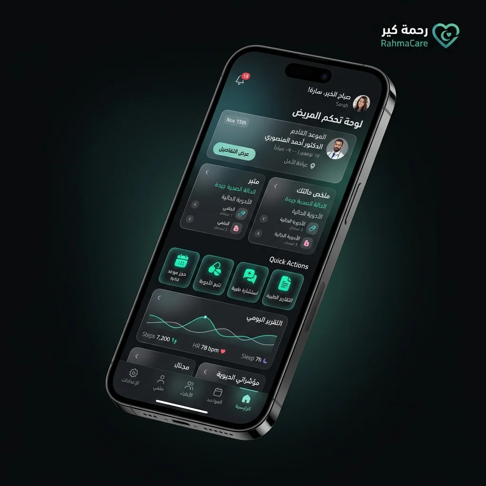
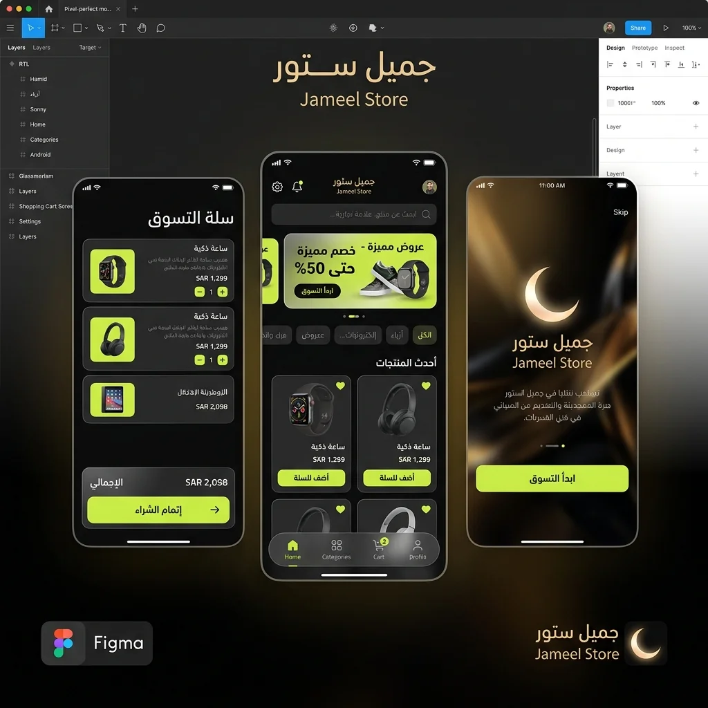
SYS-WEB · منصّة Vibe OS 4.0 — نظام تشغيل للويب لا مجرّد موقع طبقة واجهة كاملة مبنية على الذكاء الاصطناعي وسطح زجاجي حيّ — كل مكوّن فيها مستقل وقابل لإعادة الاستخدام عبر منتجات المجموعة. دراسة الحالة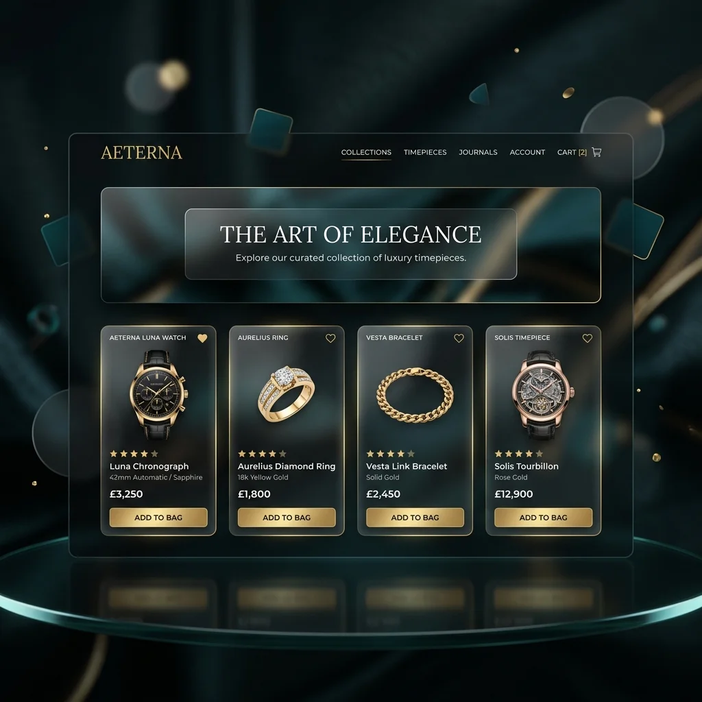
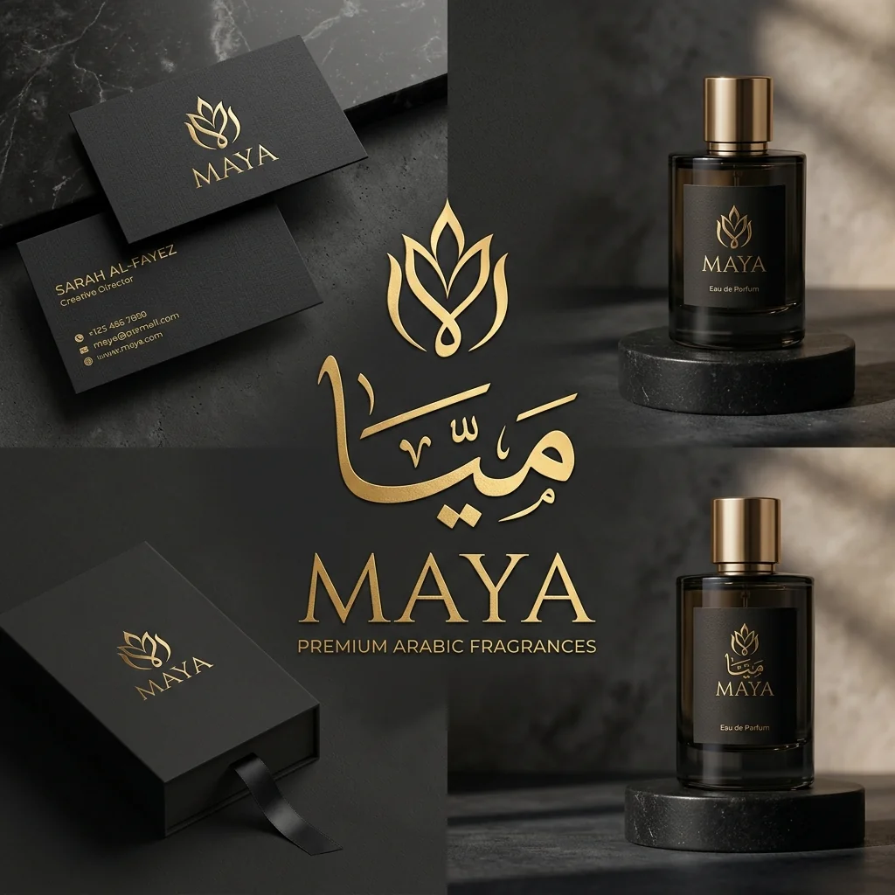
SYS-ACAD-03 · تعليم أكاديمية عوالِم — منصّة تعليمية لتأهيل مهندسي الجيل القادم مسارات، ومشاريع حقيقية، ومراجعة كود — منصّة بُنيت لتُدرَّس بها الهندسة كما تُمارَس، لا كما تُشرَح في فيديو. دراسة الحالة
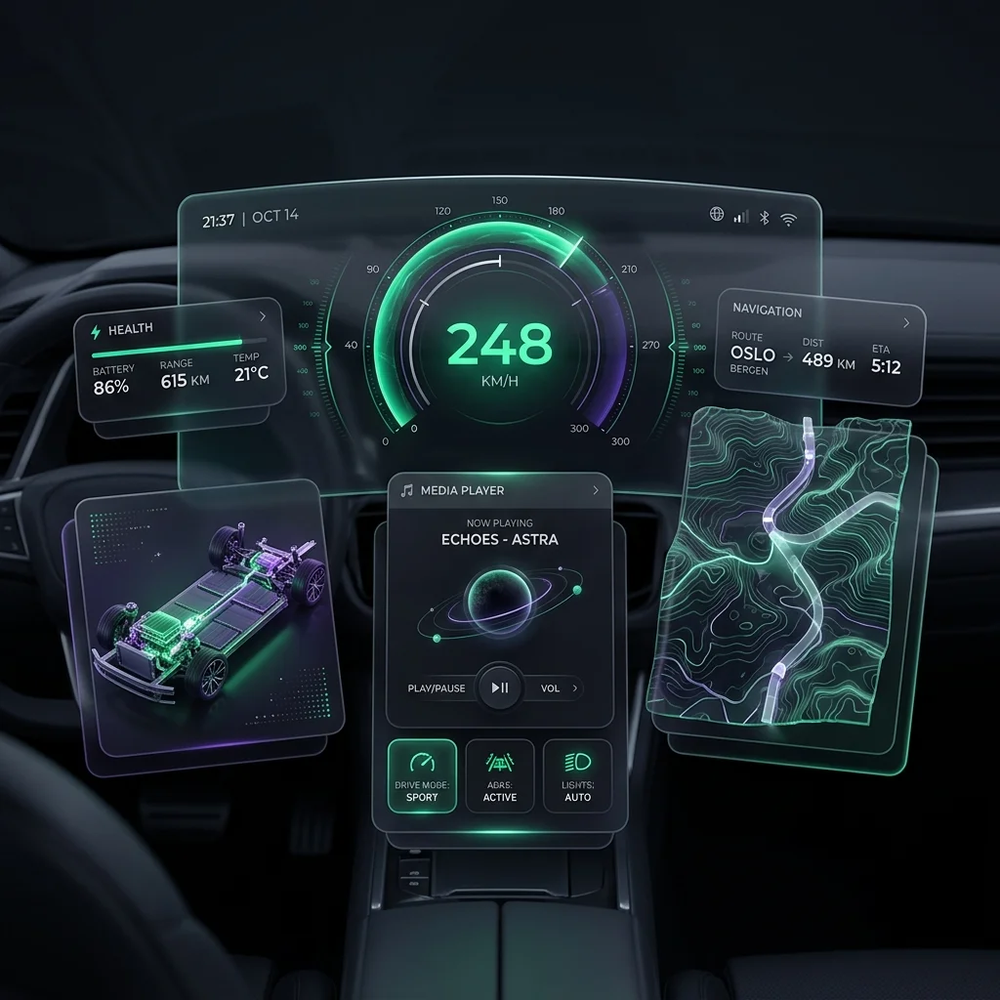
التفاصيل
القرارات خلف كل مشروع
ما الذي بُني، وبأي تقنية، ولماذا اتُّخذ كل قرار.
SYS-RAHM-02 · صحّة01
RahmaCare — رعاية صحية ذكية بين يدي العائلة
تطبيق Flutter متكامل لإدارة صحة العائلة بالذكاء الاصطناعي: تشخيص فوري، متابعة دقيقة، وتجربة مبنية على الإنسان قبل الشاشة.
- المنصّة
- iOS · Android
- التقنية
- Flutter · AI
- النطاق
- منتج كامل
- الحالة
- يعمل
تفاصيل هذه الدراسة مختصرة هنا. للاطّلاع على القرارات المعمارية الكاملة أو على أعمال لم تُنشر بعد، تواصل معنا مباشرة.
تجارة إلكترونية02
Jameel Store — متجر فاخر بتجربة تسوّق عالمية
من التصفّح إلى الدفع في تدفّق واحد لا ينكسر — واجهة Flutter فوق بنية Firebase، مصمَّمة للعرض العربي أولاً.
- المنصّة
- iOS · Android
- التقنية
- Flutter · Firebase
- النطاق
- متجر كامل
- الحالة
- يعمل
تفاصيل هذه الدراسة مختصرة هنا. للاطّلاع على القرارات المعمارية الكاملة أو على أعمال لم تُنشر بعد، تواصل معنا مباشرة.
SYS-WEB · منصّة03
Vibe OS 4.0 — نظام تشغيل للويب لا مجرّد موقع
طبقة واجهة كاملة مبنية على الذكاء الاصطناعي وسطح زجاجي حيّ — كل مكوّن فيها مستقل وقابل لإعادة الاستخدام عبر منتجات المجموعة.
- المنصّة
- ويب
- التقنية
- AI · Web
- النطاق
- منصّة
- الحالة
- يعمل
تفاصيل هذه الدراسة مختصرة هنا. للاطّلاع على القرارات المعمارية الكاملة أو على أعمال لم تُنشر بعد، تواصل معنا مباشرة.
هوية بصرية04
Maya — هوية تجمع الموروث الشرقي بالحداثة
هوية بصرية كاملة لعلامة عطور: رمز، ولوحة ألوان، وطباعة عربية ولاتينية، ونظام تطبيق يمتدّ من العبوة إلى الشاشة.
- النوع
- هوية كاملة
- المخرجات
- رمز · ألوان · طباعة
- النطاق
- علامة تجارية
- الحالة
- مُسلَّم
تفاصيل هذه الدراسة مختصرة هنا. للاطّلاع على القرارات المعمارية الكاملة أو على أعمال لم تُنشر بعد، تواصل معنا مباشرة.
SYS-ACAD-03 · تعليم05
أكاديمية عوالِم — منصّة تعليمية لتأهيل مهندسي الجيل القادم
مسارات، ومشاريع حقيقية، ومراجعة كود — منصّة بُنيت لتُدرَّس بها الهندسة كما تُمارَس، لا كما تُشرَح في فيديو.
- المنصّة
- ويب
- التقنية
- Web
- النطاق
- منصّة تعليمية
- الحالة
- يعمل
تفاصيل هذه الدراسة مختصرة هنا. للاطّلاع على القرارات المعمارية الكاملة أو على أعمال لم تُنشر بعد، تواصل معنا مباشرة.
دراسة تصميم06
لوحة قيادة سيارة — قراءة فورية في بيئة لا تحتمل التردّد
دراسة واجهة لقيادة السيارة: السرعة والطاقة والمسار في تسلسل بصري واحد، بأولوية مطلقة للسلامة على الزينة.
- النوع
- دراسة واجهة
- المجال
- HMI
- النطاق
- استكشاف
- الحالة
- دراسة
تفاصيل هذه الدراسة مختصرة هنا. للاطّلاع على القرارات المعمارية الكاملة أو على أعمال لم تُنشر بعد، تواصل معنا مباشرة.
مقالات · JOURNAL
ما نكتبه بين المشاريع
ما نتعلّمه أثناء الشحن، مكتوباً بينما لا يزال طازجاً.
ثورة وكلاء الذكاء الاصطناعي: من الأدوات إلى الأنظمة المستقلة
لماذا انتقلت الصناعة من نموذج يُجيب إلى وكيلٍ ينفّذ — وما الذي يتغيّر في الهندسة حين يصبح النظام هو من يقرّر الخطوة التالية.
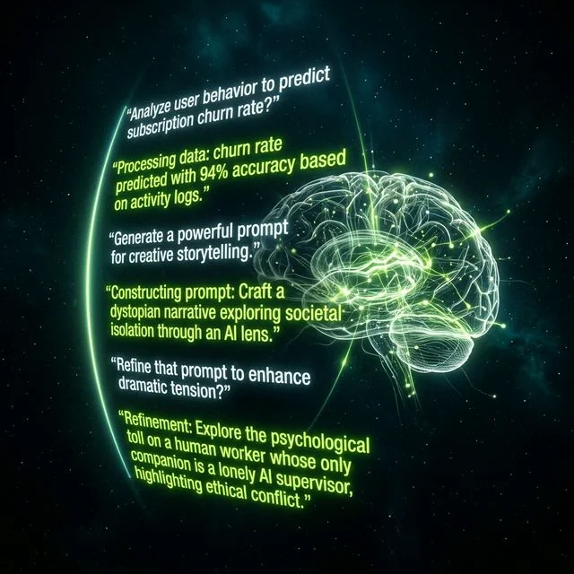
دليل بناء وكلاء AI: من الصفر إلى النشر في الإنتاج
المسار الكامل: اختيار النموذج، تصميم الأدوات، إدارة الذاكرة، ثم ما الذي ينكسر فعلاً حين يخرج الوكيل إلى مستخدمين حقيقيّين.
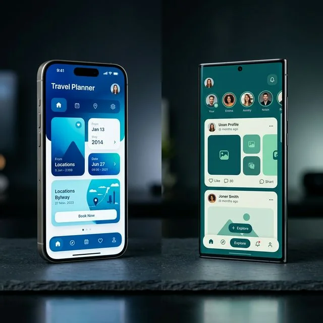
Flutter ومعايير Apple: كيف تبني تجربة بمستوى iOS الرسمي
الفروق التي يلاحظها المستخدم ولا يسمّيها: منحنيات الحركة، ارتداد التمرير، وتوقيت اللمس — ومن أين تأتي حين لا تكون أصلية.
بنية Serverless على AWS: هندسة تتمدّد بلا حدود
متى يكون بلا خادم القرار الصحيح ومتى يكون فخّاً — بحساب التكلفة والبرود والحدّ الأقصى، لا بالحماس.
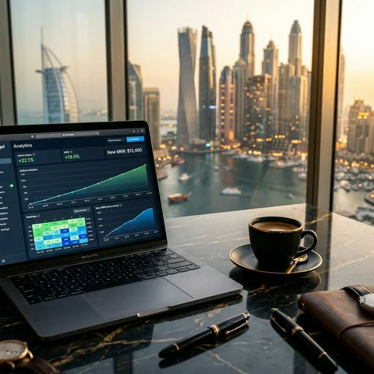
من الفكرة إلى MRR: بناء SaaS من الصفر في 8 أسابيع
جدول زمنيّ حقيقيّ لما يُبنى ولما يُؤجَّل، ولماذا يقتل النطاقُ المنتجاتِ الصغيرة أسرع من أي خطأ تقنيّ.
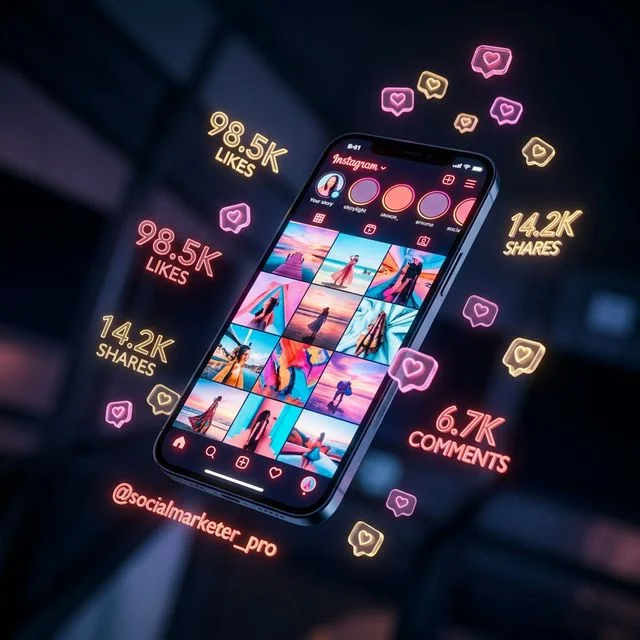
Sovereign Glass Design: ما وراء الزجاجية
الزجاج ليس تأثيراً بل قراراً عن الضوء والعمق والأرضية — وما الذي يجعله يقرأ كمادة لا كمرشّح.
أعمال أخرى
حملات وأنظمة تصميم
أعمال هوية وحملات موسمية سُلِّمت ضمن نطاقات أصغر.
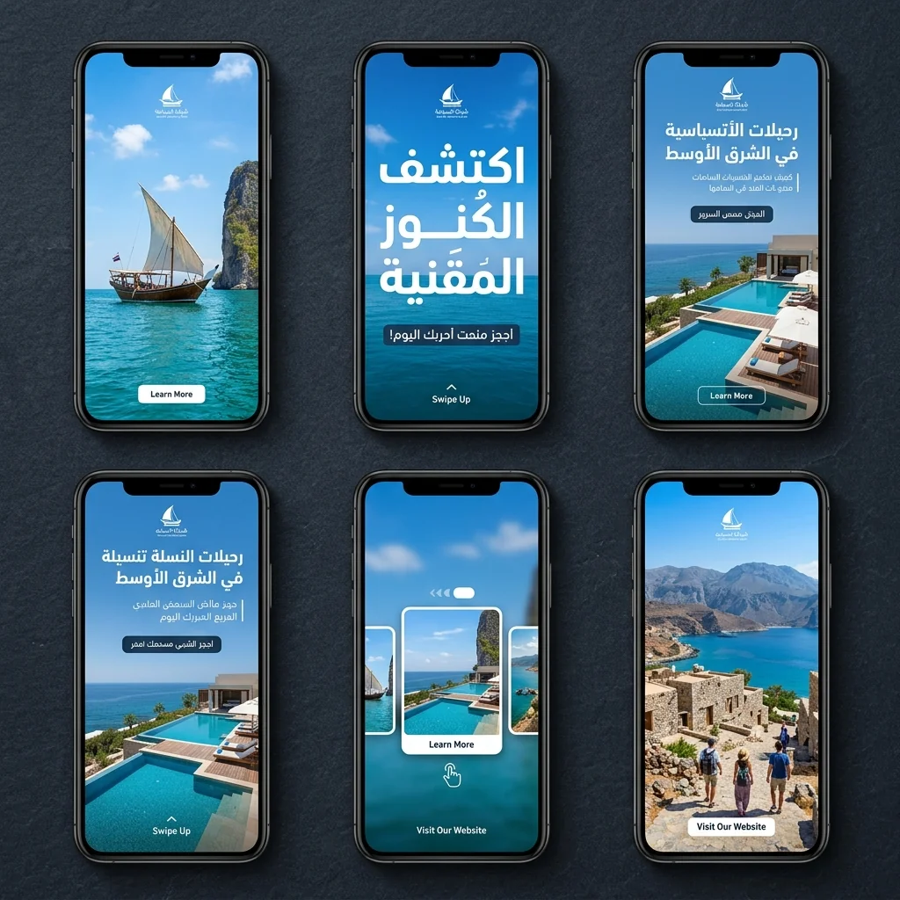
02 Social Design System نظام تصميم سوشيال ميديا قابل للتوسّع — قوالب ورموز تصميم بدل ملفات متفرّقة.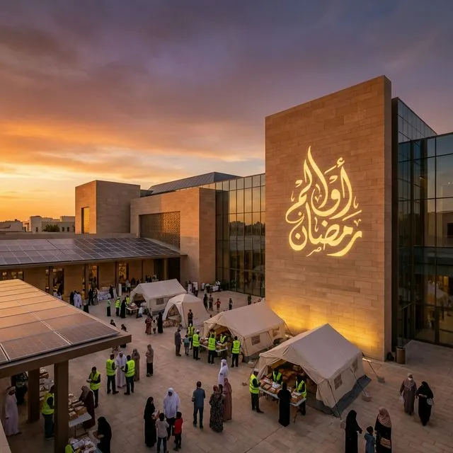
03 رمضان عوالِم 2024 هوية رمضانية لعوالِم — دافئة، أصيلة، معاصرة.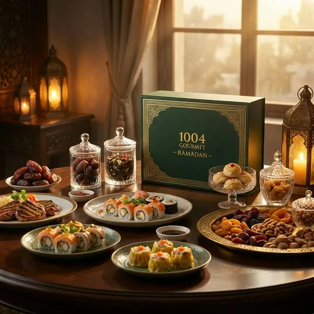
04 رمضان 1004 تجربة بصرية استثنائية لموسم رمضان.الخطوة التالية
مشروعك القادم يستحقّ هذا المستوى
أرسل لنا وصفاً للعملية التي تريد حلّها، ونعود إليك بتشخيص أوّلي وتقدير نطاق.